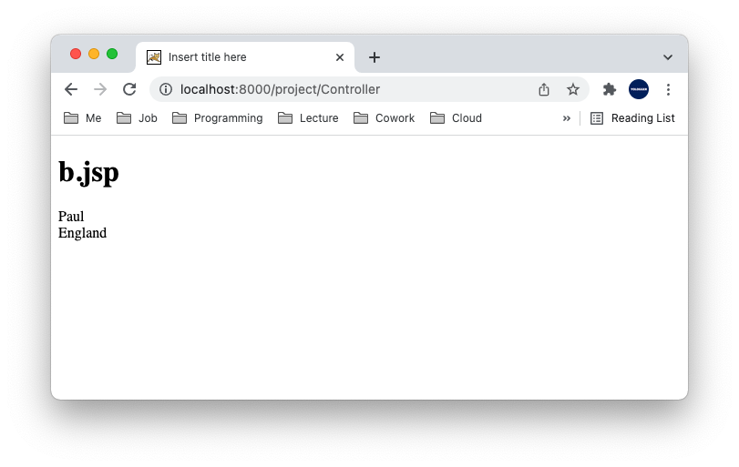

Forward와 Redirect를 사용하면 페이지를 전환할 수 있다. 다만 동작에 있어서 차이점이 있다.
Forward Forward는 다음과 같이 동작한다.
a.jsp 1 2 3 4 5 6 7 8 9 10 11 12 13 <%@ page language="java" contentType="text/html; charset=UTF-8" pageEncoding="UTF-8"%> <!DOCTYPE html > <html > <head > <meta charset ="UTF-8" > <title > Insert title here</title > </head > <body > <jsp:forward page ="b.jsp" > </jsp:forward > </body > </html >
b.jsp 1 2 3 4 5 6 7 8 9 10 11 12 <%@ page language="java" contentType="text/html; charset=UTF-8" pageEncoding="UTF-8"%> <!DOCTYPE html > <html > <head > <meta charset ="UTF-8" > <title > Insert title here</title > </head > <body > <h1 > b.jsp</h1 > </body > </html >
주목할 점은 웹 브라우저에는 최초의 호출한 URL인 a.jsp가 표시된다는 것이다. 그러나 화면에 실제 출력되는 페이지는 b.jsp다.RequestDispatcher클래스의 forward() 메소드로 포워딩할 수 있다.
Controller.java 1 2 3 4 5 6 7 8 9 10 import javax.servlet.RequestDispatcher;@WebServlet("/Controller") public class Controller extends HttpServlet protected void doGet (HttpServletRequest request, HttpServletResponse response) throws ServletException, IOException RequestDispatcher dispatcher = request.getRequestDispatcher("/b.jsp" ); dispatcher.forward(request, response); } }
Controller Servlet은 doGet()메소드로 수신한 HttpServletRequest를 b.jsp에 그대로 전달한다. 따라서 다음과 같이 b.jsp에서 HttpServletRequest에 접근할 수 있다.
Controller.java 1 2 3 4 5 6 7 8 9 10 11 12 13 14 import javax.servlet.RequestDispatcher;@WebServlet("/Controller") public class Controller extends HttpServlet protected void doGet (HttpServletRequest request, HttpServletResponse response) throws ServletException, IOException request.setAttribute("name" , "Paul" ); request.setAttribute("nation" , "England" ); RequestDispatcher dispatcher = request.getRequestDispatcher("/b.jsp" ); dispatcher.forward(request, response); } }
b.jsp 1 2 3 4 5 6 7 8 9 10 11 12 13 14 <%@ page language="java" contentType="text/html; charset=UTF-8" pageEncoding="UTF-8"%> <!DOCTYPE html > <html > <head > <meta charset ="UTF-8" > <title > Insert title here</title > </head > <body > <h1 > b.jsp</h1 > <div > <%= request.getAttribute("name")%></div > <div > <%= request.getAttribute("nation")%></div > </body > </html >

Redirect Redirect는 다음과 같이 동작한다.
Controller.java 1 2 3 4 5 6 7 8 9 10 import javax.servlet.RequestDispatcher;@WebServlet("/Controller") public class Controller extends HttpServlet protected void doGet (HttpServletRequest request, HttpServletResponse response) throws ServletException, IOException response.sendRedirect("b.jsp" ); } }
b.jsp 1 2 3 4 5 6 7 8 9 10 11 12 <%@ page language="java" contentType="text/html; charset=UTF-8" pageEncoding="UTF-8"%> <!DOCTYPE html > <html > <head > <meta charset ="UTF-8" > <title > Insert title here</title > </head > <body > <h1 > b.jsp</h1 > </body > </html >
이제 웹 브라우저에서 localhost:8000/project/Controller로 접속하면 localhost:8000/project/b.jsp로 리다이렉트 된다.
Forward는 서버에서 전환되는 페이지로 이동하기 때문에 HttpServletRequest를 다시 생성하지 않고 그저 전달 한다.
반면 Redirect는 클라이언트에게 특정 페이지로 재요청을 보내도록 한다. 따라서 HttpServletRequest가 다시 생성 된다. 따라서 아래 예제의 b.jsp에서 request.getAttribute("name"), request.getAttribute("nation")값이 null이 된다.
Controller.java 1 2 3 4 5 6 7 8 9 10 11 12 13 import javax.servlet.RequestDispatcher;@WebServlet("/Controller") public class Controller extends HttpServlet protected void doGet (HttpServletRequest request, HttpServletResponse response) throws ServletException, IOException request.setAttribute("name" , "Paul" ); request.setAttribute("nation" , "England" ); response.sendRedirect("b.jsp" ); } }
b.jsp 1 2 3 4 5 6 7 8 9 10 11 12 13 14 <%@ page language="java" contentType="text/html; charset=UTF-8" pageEncoding="UTF-8"%> <!DOCTYPE html > <html > <head > <meta charset ="UTF-8" > <title > Insert title here</title > </head > <body > <h1 > b.jsp</h1 > <div > <%= request.getAttribute("name")%></div > <div > <%= request.getAttribute("nation")%></div > </body > </html >